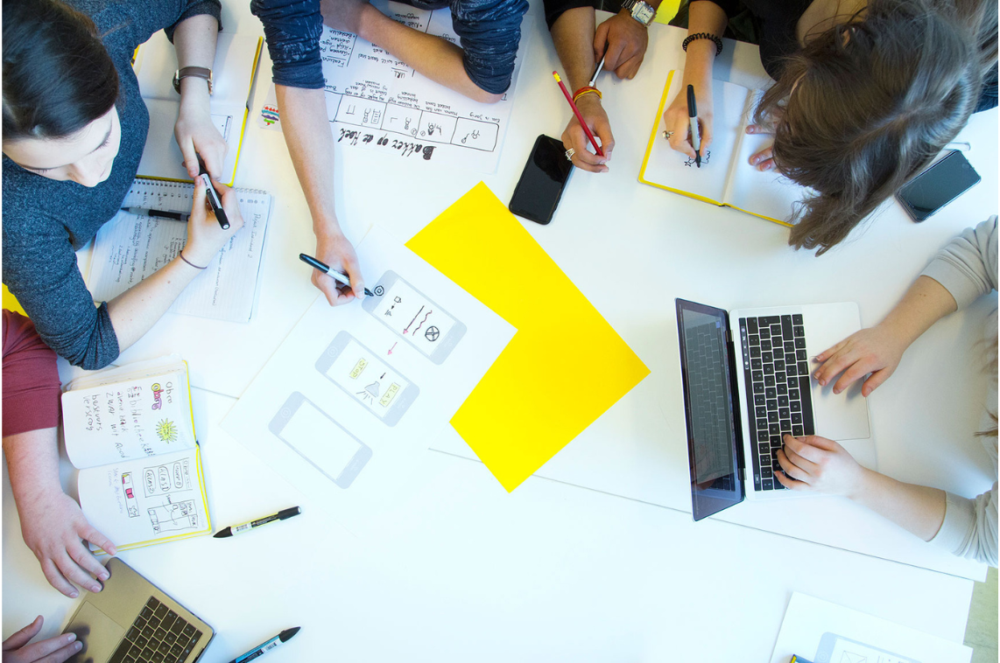
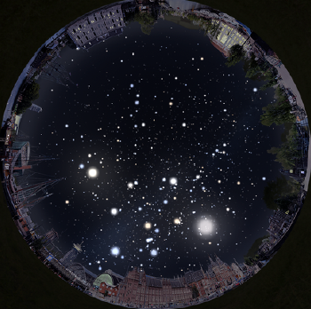
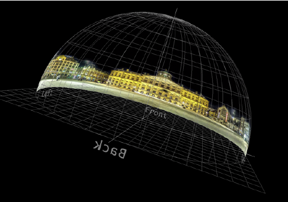
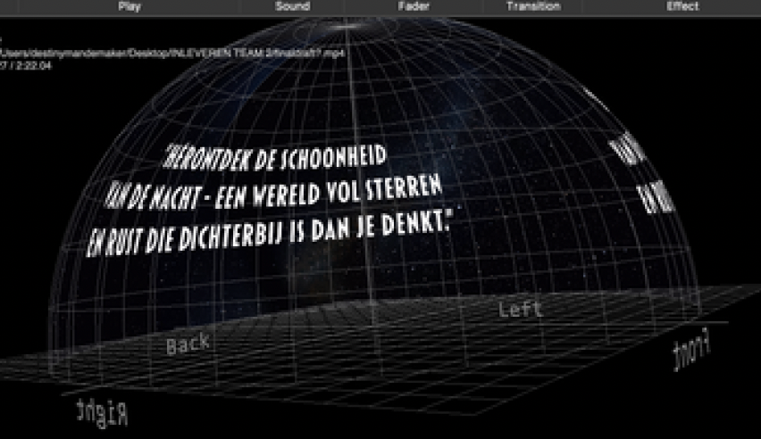

In mijn derde jaar van CMD volgde ik een interessante minor, namelijk Visual Information Design!

| Opleiding | Communication & Multimedia Design |
|---|---|
| Jaar | 3 |
| Datum | september 2024 - januari 2025 |
Voor onze minor Information Design werkten wij, Destiny, Maxwell, Karlijn en Marit, aan Project Donker in opdracht van ARTIS. Dit project richt zich op het creëren van bewustwording rond lichtvervuiling en de impact ervan op natuur, biodiversiteit en het zicht op de sterrenhemel.
Onze visualisatie wordt gepresenteerd in het ARTIS Planetarium, een indrukwekkende dome die zorgt voor een meeslepende 360°-ervaring. Dit biedt een unieke kans én uitdaging: er bestaan geen vaste ontwerpregels voor dit medium, waardoor we creatief en experimenteel te werk zijn gegaan.
Het doel van onze bijdrage was om bezoekers niet alleen visueel te prikkelen, maar ook aan het denken te zetten over hun eigen rol in het beperken van lichtvervuiling.



Wil je meer van mij zien? Klik hieronder om meer projecten te bekijken!
BEKIJK MEER PROJECTEN